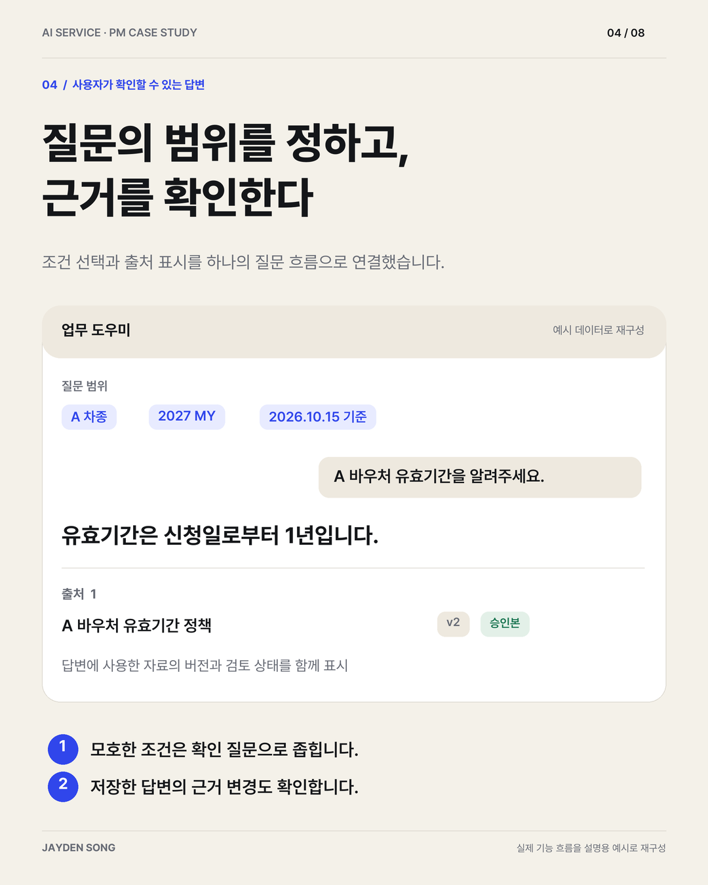

가상 데이터 · 실제 공개 데모 화면
가상 데이터 · 실제 공개 데모 화면CASE 01 / AI WORKFLOW
업무 자동화 · 사용자 통제Mailwork
메일 속 요청을, 실행할 업무로.
긴 메일 대화에서 할 일·담당·기한·결정사항을 정리하고, 오늘·프로젝트·일정 화면에서 사용자의 판단을 이어가는 개인 업무용 AI 도구입니다.
문제와 설계 과정 보기공개 데모 제공 · 실제 메일함 연결과 AI 호출 없음
흩어진 요청을 실행할 업무로, 복잡한 자료를 확인할 근거로.
문제 정의부터 사용자 흐름, 운영 정책과 구현까지 연결한 프로젝트를 소개합니다.
무엇을 만들었는지와 함께, 어떤 판단을 서비스의 동작으로 옮겼는지 살펴볼 수 있습니다.
가상 데이터 · 실제 공개 데모 화면긴 메일 대화에서 할 일·담당·기한·결정사항을 정리하고, 오늘·프로젝트·일정 화면에서 사용자의 판단을 이어가는 개인 업무용 AI 도구입니다.
문제와 설계 과정 보기공개 데모 제공 · 실제 메일함 연결과 AI 호출 없음

예시 데이터로 재구성한 설명 자료차종·연식·기준일에 따라 달라지는 자료를 근거와 함께 안내하고, 정책 변경의 검토·승인·적용 버전을 연결한 업무용 AI 서비스입니다.
정책과 사용자 경험 보기내부 업무용 구현 사례 · 공개 자료는 가상 예시
 기존 화면 템플릿 · 가상 방문 기록
기존 화면 템플릿 · 가상 방문 기록QR 현장 등록과 이메일 사전 신청을 연결하고, 관리자 승인·방문 현황·계정 관리까지 구성한 웹 서비스입니다. 실제 화면과 기능별 작업을 상세 문서로 정리했습니다.
실제 화면과 상세 작업 보기실제 구현 화면 7종 · 기능·데이터·검증 범위 수록
기능 목록에 머무르지 않고 사용자의 판단, 데이터의 상태, 실패할 때의 행동을 함께 정리합니다.
정보가 흩어지는 지점과 사용자가 반복해서 확인해야 하는 판단을 구분합니다.
사용자·시스템·AI의 역할을 나누고, 상태 변경과 권한·예외의 기준을 정합니다.
입력 화면과 데이터, 처리 로직을 연결한 프로토타입으로 설계한 흐름을 구체화합니다.
구현 여부와 품질·성과 검증을 구분하고, 확인하지 못한 부분을 다음 작업으로 남깁니다.
이 포트폴리오는 업무에서 출발한 문제를 사용자 경험과 동작 규칙으로 정리하고, 구현과 검증으로 이어간 과정을 담고 있습니다.
서비스 기획 · 업무 자동화 · AI 프로토타입